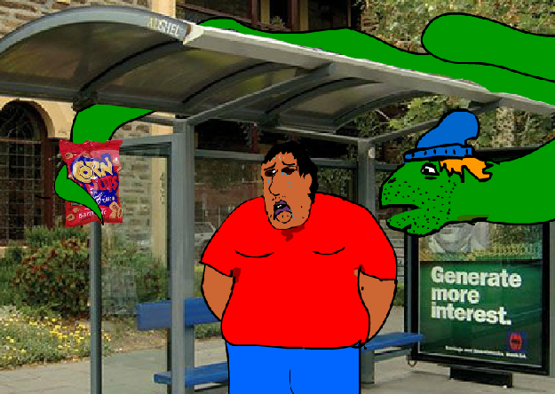

Trash Mountain (2010) is an unfinished rock opera. The Trash King comes to the realm of man to find a bride. After luring a young woman into his magic trash truck with the promise of a Costco Card, the woman is transported to Trash Mountain where she must navigate the fantastic lands of the Trash King's realm and depend on the friends she makes there to get her home. Or will the Trash King's promises of happiness convince her to stay? Guitar and Vocals performed by Sean Cahill.
The Kentucky Liars Society (2008) is a Flash animation focused on a group of animals and objects (A bear, penguin and Roomba) sitting in a room and telling each other increasingly outlandish lies. All of the .swf and .fla files have been lost to time, but the above screenshot remains. The loading button actually worked.
Finding Numar (2009) is Flash animation about a lonesome teenager named Numar who lives with his Grandma. One day while shopping for groceries a blonde party snake devours Numar's Grandma and then follows him around for the rest of the day trying to get Numar to buy him beer while telling him gross stories about his sex life. Only a partial file remains. Draft copy available upon request.
The Midnight Ride (2013) is an acrylic painting that I submitted to the Glass Lewis & Co. (former employer) first annual art competition. I won 1st place and a $100 Jamba Juice gift card and the company never had an art competition ever again.
Monster Mattress (2005) is student film that I wrote/directed/edited and submitted to the first annual Stevenson College film festival. It's about a set of haunted, man-hungry mattresses that terrorize the residents of a college dorm. I won 1st place and a $100 gift certificate and Stevenson College never had another film festival ever again.